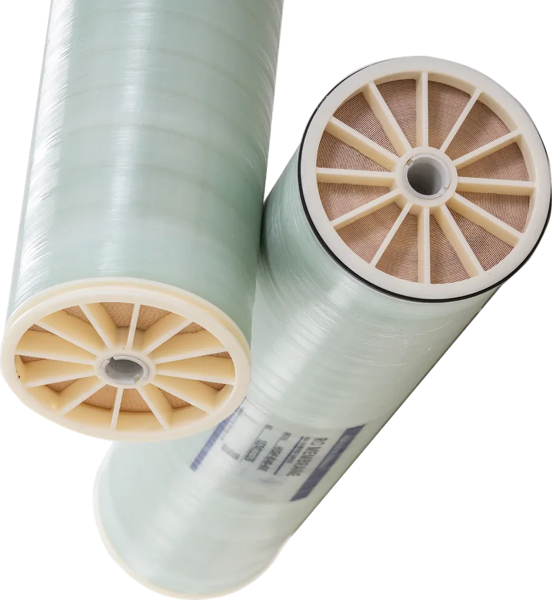
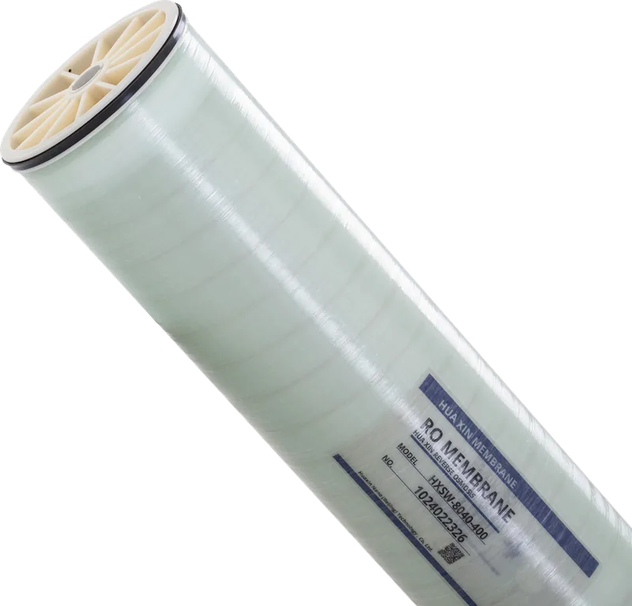

产品系列
覆盖水处理全流程的膜产品。
九大产品系列：五个反渗透系列、两个纳滤系列，以及 MBR 组件和柱式超滤组件。反渗透和纳滤元件提供标准 4040 和 8040 规格。

HX-XLP反渗透
超低压
超低压

超低压反渗透膜元件
超低操作压力下的高产水量，适用于 1,000 ppm 以下进水。
HX-LP反渗透
低压
低压

低压反渗透膜元件
节能高产水反渗透膜，适用于 2,000 ppm 以下进水，耐受反复酸碱清洗。
HX-BW反渗透
苦咸水
苦咸水

苦咸水反渗透膜元件
高脱盐工业级反渗透膜，适用于 5,000 ppm 以下进水，pH 耐受范围宽，易于清洗。
HX-BWFR反渗透
抗污染
抗污染

抗污染反渗透膜元件
抗污染反渗透膜，适用于 5,000 ppm 以下的高污染苦咸水，已在矿井水回用中经过 693 天现场验证。
HX-SW反渗透
海水
海水

海水淡化反渗透膜元件
高脱盐、高通量反渗透膜，适用于 10,000 ppm 以上进水。不采用氧化后处理来人为提升初始性能。
HX-HQ纳滤
饮用水
饮用水

高品质饮用水纳滤膜元件
高通量纳滤膜，用于市政地表水或井水的深度净化，保留有益矿物质，改善口感。
HX-BM纳滤
工业分盐
工业分盐
工业分盐纳滤膜元件
高选择性纳滤，截留分子量 200 Da 以上的有机物和二价盐，同时透过部分一价盐。
HX-MBRMBR 与超滤
膜生物反应器
膜生物反应器

膜生物反应器（MBR）组件
不锈钢框架组件，膜片间距大于 100 mm，用于市政和工业生化处理。
HX-UFMBR 与超滤
柱式超滤
柱式超滤
柱式超滤（UF）膜组件
PVDF 中空纤维柱式超滤，孔径小于 30 nm，用于水净化和废水处理。
产品选型
从您的水质出发。
三步完成，依据华信产品手册中的进水范围、应用领域和型号。结果仅作为起点，实际系统规模需通过设计与成本评估确定。
对比
反渗透与纳滤元件并列对比。
各产品的额定值均在其自身测试条件下测得。比较脱盐率时，请同时参考对应的测试条件。
| 产品 | 类型 | 进水含盐量 | 稳定脱盐率 | 测试条件 | 型号 |
|---|---|---|---|---|---|
| HX-XLP | RO | < 1,000 ppm | 99.0% | 500 ppm NaCl，100 psi（0.69 MPa），25 °C，回收率 15%，pH 7–8 | 4040-100 · 8040-400 · 8040-440 |
| HX-LP | RO | < 2,000 ppm | 99.3% | 1,500 ppm NaCl，150 psi（1.03 MPa），25 °C，回收率 15%，pH 7–8 | 4040-100 · 8040-400 · 8040-440 |
| HX-BW | RO | < 5,000 ppm | 99.5% | 2,000 ppm NaCl，225 psi（15.5 bar），25 °C，回收率 15%，pH 7–8 | 4040-100 · 8040-400 · 8040-440 |
| HX-BWFR | RO | < 5,000 ppm，高污染 | 99.5% | 2,000 ppm NaCl，225 psi（15.5 bar），25 °C，回收率 15%，pH 7–8 | 4040-100 · 8040-400 |
| HX-SW | RO | > 10,000 ppm | 99.7% | 32,000 ppm NaCl，800 psi（5.5 MPa），25 °C，回收率 8%，pH 7–8 | 4040-100 · 8040-400 · 8040-440 |
| HX-HQ | NF | 市政地表水或井水 | > 90% | 2,000 ppm NaCl，100 psi（6.9 bar），25 °C，回收率 15%，pH 7–8 | 4040-100 · 8040-400 · 8040-440 |
| HX-BM | NF | 工业工艺料液 | 98% MgSO₄ | 2,000 ppm NaCl / MgSO₄，100 psi（6.9 bar），25 °C，回收率 15%，pH 7–8 | 4040-100 · 8040-400 · 8040-440 |
HX-BM 的截留率为 MgSO₄ 截留率（NaCl 为 5–30%）。单支元件产水量偏差在 ±20% 以内（HX-BM：不低于标称值的 85%）。
型号编码
读懂每一个华信膜元件型号。
示例：HX-BW-8040-400
品牌HXHUAXIN
产品类型BWXLP · LP · BW · BWFR · SW · HQ · BM
元件规格8040直径 8.0″ 或 4.0″ × 长度 40″
膜面积400100、400 或 440 ft²